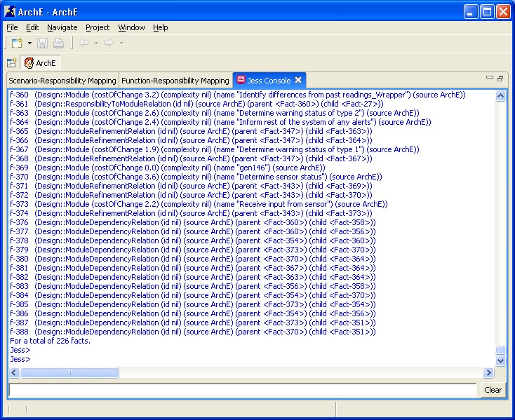

This tutorial will help you to understand the Jess Console.
The jess console is a text editor for the Jess Rule engine that is integrated within the ArchE plugin. The user can interact with the Jess Rule Engine (and therefore the ArchE Core) using the text box at the bottom of the Jess Console. Changes affected to the fact base using the Jess Console are reflected automatically in the other ArchE views.
